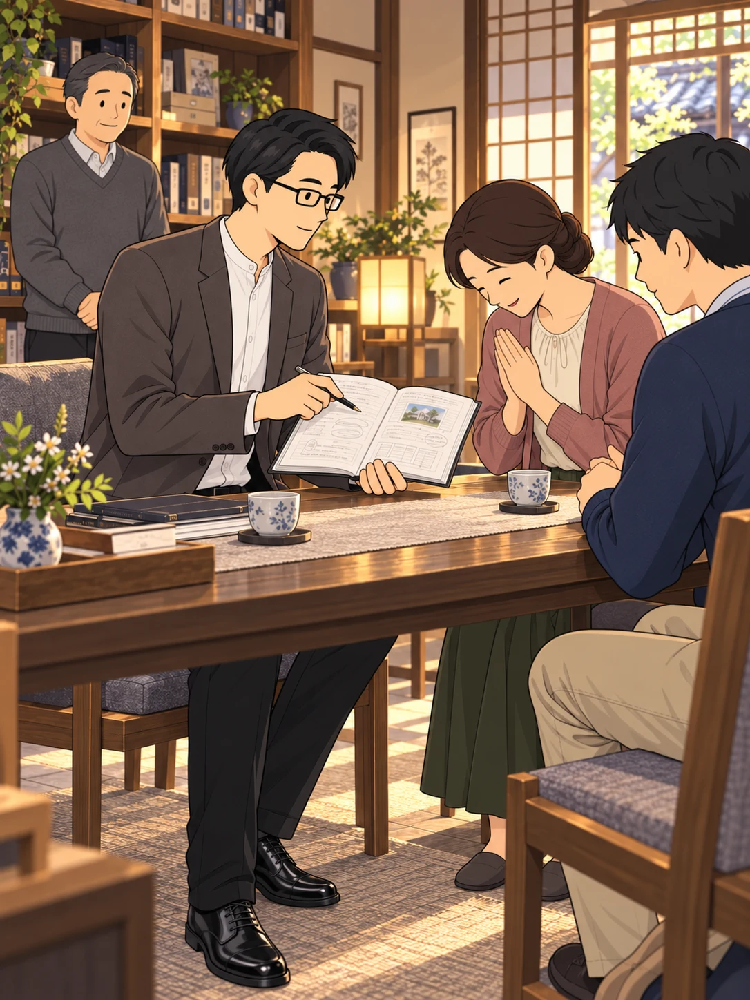

KU-FUDO STORIES
空不動先生の物語
問い続けてたどり着いた道。
読みたい話を選ぶ
第1〜8話 公開中第1話科学者を志した青年と
科学者を志した青年と
「99%の無神論」
科学で世界を知りたい。
それでも、消せない問いがあった。

第2話突然の病と挫折
突然の病と挫折
「1%の可能性」への懸け
突然変わった日常。
病室で、自分を問い直していく。

第3話既存宗教への失望と
既存宗教への失望と
「普遍の真理」を求める誓い
本を読み、人と語り、問い続ける。
すべての人に通じる真理を求めて。
第4話突然の啓示と
突然の啓示と
霊修行の始まり
思いがけない体験が始まる。
それでも、特別な座は求めなかった。
第5話信頼の揺らぎと
信頼の揺らぎと
「化け猫」の声
「化け猫」の声に揺れる心。
求めてきた原点を確かめる、全10コマ。

第6話霊現象の限界
霊現象の限界
「神のロボット」からの脱却
人の役に立つ、その一方で。
胸の違和感が、新たな道をひらく。
第7話 袋小路からの脱出
袋小路からの脱出
「判断放棄」という究極の決断
自分が正しいという確信。
その手を、静かにほどいていく。

第8話 超越意識への到達と
超越意識への到達と
《超越人格》の発見
手放した先に広がる静けさ。
過去と世界の見え方が変わっていく。
第9話 NEW山に籠もらぬ
山に籠もらぬ
「徹底した現実主義」
会社を経営し、社員を守り、家庭を大切にする。
現実の中で、真理を生きる。